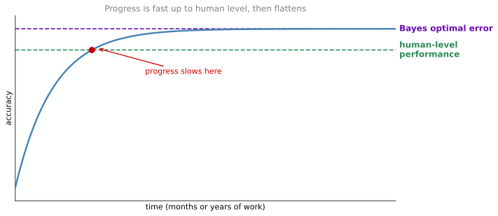
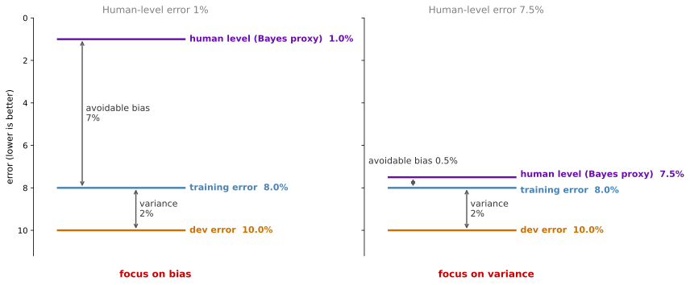
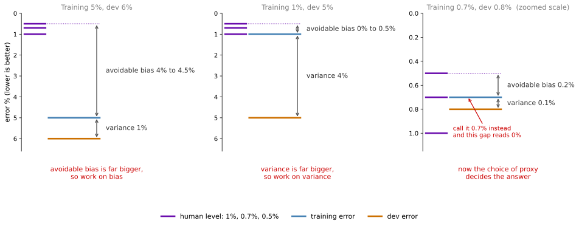

Comparing to Human-Level Performance
deep-learning
ml-strategy
bias-variance
human-level-performance
Bayes optimal error, human-level performance as a proxy for it, avoidable bias versus variance, and the guidelines for improving your model.
Knowing how well humans do on a task turns out to be one of the most useful pieces of information you can have when deciding what to work on next. It tells you how much room is left, and therefore whether you should be attacking bias or attacking variance.
Why Human-Level Performance?
In the last few years, many more machine learning teams have been talking about comparing their systems to human-level performance. There are two main reasons for this. First, because of advances in deep learning, machine learning algorithms are suddenly working much better, so it has become feasible in a lot of application areas for them to actually become competitive with what people can do. Second, the workflow of designing and building a machine learning system is much more efficient when you are trying to do something that humans can also do, so in those settings it becomes natural to talk about comparing to human-level performance.
On a lot of machine learning tasks, as a team or a research community works on a problem over many months or even years, progress tends to be relatively rapid as the algorithm approaches human-level performance. But after the algorithm surpasses human-level performance, progress and accuracy actually slow down. It may keep getting better, but the slope of the improvement flattens. Over time, as you train bigger and bigger models on more and more data, performance approaches but never surpasses a theoretical limit called the Bayes optimal error.
Think of Bayes optimal error as the best possible error. It is the limit on the accuracy of any function mapping from \(x\) to \(y\). For speech recognition, if \(x\) is audio clips, some audio is so noisy that it is impossible to tell what the correct transcription is, so perfect accuracy may not be 100 percent. For cat recognition, some images are so blurry that it is impossible for anyone or anything to tell whether there is a cat in the picture. Bayes optimal error, also called Bayes error for short, is the error of the very best theoretical function mapping from \(x\) to \(y\), and it can never be surpassed. No matter how many years you work on a problem, you never get past it.
Why Progress Slows After Human Level
There are two reasons why progress often slows once you surpass human-level performance.
The first is that for many tasks, human-level performance is not that far from Bayes optimal error. People are very good at looking at images and telling whether there is a cat, or listening to audio and transcribing it. So by the time you surpass human-level performance, there may not be that much headroom left.
The second is that as long as your performance is worse than human-level performance, there are certain tools you can use that become harder to use once you have passed it. For tasks that humans are good at, which includes looking at pictures and recognizing things, listening to audio, and reading language (the natural perception tasks), three tactics are available while the algorithm is still behind.
- You can get labeled data from humans, meaning you can ask or hire people to label examples for you so you have more data to feed your learning algorithm.
- You can do manual error analysis, asking people to look at examples your algorithm got wrong and trying to gain insight into why a person got it right when the algorithm got it wrong. This is covered in a later section.
- You can get a better analysis of bias and variance, which is the subject of the next section.
As long as your algorithm is doing worse than humans, you have these important tactics. Once your algorithm is doing better than humans, all three become harder to apply. This is another reason why comparing to human-level performance is helpful, especially on tasks that humans do well.
Even though you already know what bias and variance are, it turns out that knowing how well humans can do on a task helps you understand how much you should try to reduce bias and how much you should try to reduce variance.
Review Questions
1. What is Bayes optimal error, and why is it not always zero?
TipAnswer
It is the best possible error achievable by any function mapping from \(x\) to \(y\), a theoretical limit that can never be surpassed. It is not always zero because some inputs simply do not determine the label. Audio can be too noisy to transcribe, and an image can be too blurry for anyone to say whether there is a cat in it.
1. Give the two reasons that progress typically slows once an algorithm passes human-level performance.
TipAnswer
First, human-level performance is often close to Bayes error on natural perception tasks, so there is little headroom left. Second, three useful tactics stop working well. You can no longer usefully get humans to label more data, manual error analysis loses its edge because people are not better than the algorithm anymore, and your estimate of Bayes error, and therefore of bias versus variance, becomes unreliable.
Avoidable Bias
You want your learning algorithm to do well on the training set, but sometimes you do not actually want it to do too well. Knowing human-level performance tells you exactly how well, but not too well, you want the algorithm to do on the training set.
Take cat classification. Say humans have near-perfect accuracy, so human-level error is 1 percent. If your learning algorithm achieves 8 percent training error and 10 percent dev error, then maybe you want it to do better on the training set. The huge gap between how well your algorithm does on the training set and how humans do shows that your algorithm is not even fitting the training set well. In this case, focus on reducing bias, so train a bigger neural network or run training longer.
Now keep the same training error and dev error, but imagine that human-level performance is not 1 percent. On a different application or a different data set, say human-level error is 7.5 percent, because the images are so blurry that even humans cannot tell whether there is a cat in the picture. (This example is slightly contrived, since humans really are very good at looking at pictures and spotting cats, but take it as given.) Even though your training error and dev error are the same as before, you are actually doing just fine on the training set. It is doing only a little bit worse than human-level performance. Here you would instead focus on reducing variance, so you might try regularization to bring your dev error closer to your training error.

Human-Level Error as a Proxy for Bayes Error
The earlier discussion of bias and variance mainly assumed tasks where Bayes error is nearly zero. To explain what just happened, think of human-level error as a proxy or an estimate for Bayes error. For computer vision tasks this is a pretty reasonable proxy, because humans are very good at computer vision, so whatever a human can do is probably not too far from Bayes error. By definition human-level error is worse than Bayes error, since nothing can be better than Bayes error, but it might not be far off.
The surprising thing is that with identical training error and dev error in the two cases, what we think is achievable is what decided whether to use bias reduction tactics or variance reduction tactics. On the left, 8 percent training error is really high when you believe you could get it down to 1 percent, so bias reduction can help. On the right, if Bayes error is close to 7.5 percent, there is not much headroom for reducing training error further. You do not want training error to be much better than 7.5 percent, because you could only achieve that by starting to overfit the training set. There is much more room for improvement in the 2 percent gap, using variance reduction techniques such as regularization or getting more training data.
To give these things names, and this is not widely used terminology but it is a useful way of thinking about it, call the difference between Bayes error (or your approximation of it) and the training error the avoidable bias. You want to keep improving your training performance until you get down to Bayes error, but you do not actually want to do better than Bayes error, and you cannot do better unless you are overfitting. The difference between your training error and your dev error is still a measure of the variance problem.
\[ \underbrace{\text{training error} - \text{Bayes error}}_{\text{avoidable bias}} \qquad\qquad \underbrace{\text{dev error} - \text{training error}}_{\text{variance}} \]
The term avoidable bias acknowledges that there is some minimum level of error that you simply cannot get below. If Bayes error is 7.5 percent, you do not want to get below that. So rather than saying that 8 percent training error means the bias is 8 percent, you say the avoidable bias is 0.5 percent, while 2 percent is the measure of the variance, and there is much more room in reducing that 2 percent than in reducing the 0.5 percent. In contrast, in the example on the left, 7 percent is the avoidable bias and 2 percent is the variance, so there is much more potential in reducing the avoidable bias.
Review Questions
1. Training error is 8 percent and dev error is 10 percent. Why does the right next step depend entirely on human-level error?
TipAnswer
Because human-level error estimates Bayes error, which is what tells you how much of the 8 percent is avoidable. If human-level error is 1 percent, the avoidable bias is 7 percent and the variance is 2 percent, so you attack bias with a bigger network or longer training. If human-level error is 7.5 percent, the avoidable bias is only 0.5 percent while the variance is still 2 percent, so you attack variance with regularization or more data. Identical error numbers, opposite decisions.
1. Why is it called avoidable bias rather than just bias?
TipAnswer
Because part of the error is not avoidable. If Bayes error is 7.5 percent, no amount of work removes that 7.5 percent, so counting all 8 percent of training error as bias overstates the opportunity. Avoidable bias counts only the part between Bayes error and your training error, which is the part you can actually remove.
1. Why would you not want training error to fall well below Bayes error?
TipAnswer
Because it is not genuinely possible. Getting training error below Bayes error means the model is fitting noise in the training data, which is overfitting, and it will not carry over to the dev set. It is a sign to look at variance, not a success.
Understanding Human-Level Performance
The term human-level performance is sometimes used casually in research articles, but it can be defined more precisely, and the most useful definition is the one that helps you drive progress on your project. Remember that one use of the phrase human-level error is that it gives you a way of estimating Bayes error, the best possible error any function could ever achieve.
With that in mind, consider a medical image classification example. You want to look at a radiology image and make a diagnosis classification decision. Suppose the error rates are as follows.
| Who is looking at the image | Error |
|---|---|
| A typical untrained human | 3% |
| A typical doctor | 1% |
| An experienced doctor | 0.7% |
| A team of experienced doctors, discussing and debating | 0.5% |
So how should you define human-level error here? Is it 3 percent, 1 percent, 0.7 percent, or 0.5 percent?
If you want a proxy or an estimate for Bayes error, then given that a team of experienced doctors discussing and debating achieves 0.5 percent error, we know that Bayes error is less than or equal to 0.5 percent. Because some system, namely that team of doctors, can achieve 0.5 percent error, the optimal error has to be 0.5 percent or lower. We do not know how much lower. Maybe an even larger team of even more experienced doctors could do better. But the optimal error cannot be higher than 0.5 percent. So use 0.5 percent as the estimate for Bayes error, and define human-level performance as 0.5 percent, at least if you are hoping to use human-level error in the analysis of bias and variance.
For the purpose of publishing a research paper or deploying a system, there is a different definition you might use, which is surpassing the performance of a typical doctor. That seems like a useful result if accomplished, and surpassing a single doctor might mean the system is good enough to deploy in some context. The takeaway is to be clear about your purpose in defining the term. If the purpose is to argue that you can surpass a single human and therefore deploy your system, the 1 percent figure is the appropriate one. If the purpose is a proxy for Bayes error, the 0.5 percent figure is.
When the Choice Matters
To see when the choice matters, keep the same medical imaging problem and the same three candidate definitions of human-level error, and change only the algorithm. In each of the three cases below, the purple marks are the three candidates (1 percent, 0.7 percent, and 0.5 percent), and the two gaps you care about are still the same two as before. The gap from the human marks down to the training error is the avoidable bias, and the gap from the training error to the dev error is the variance. The question each time is which of those two gaps is bigger, because that is the one worth attacking.

Start with the first case, where the algorithm gets 5 percent on the training set and 6 percent on the dev set. Notice that the three purple marks sit almost on top of each other compared with how far away the training error is. Whichever one you call human-level error, the avoidable bias comes out between 4 percent and 4.5 percent, and that dwarfs the 1 percent variance. So the choice of definition changes nothing here. Focus on bias reduction techniques such as training a bigger network.
The second case flips the picture. Training error is 1 percent and dev error is 5 percent. Now the avoidable bias is somewhere between 0 percent and 0.5 percent depending on which mark you pick, while the gap down to the dev error is 4 percent. Again the choice does not matter, because 4 percent is much bigger than half a percent either way. Focus on variance reduction techniques such as regularization or getting a bigger training set.
The third case is the one worth slowing down on, and notice that the scale is zoomed in. Training error is 0.7 percent and dev error is 0.8 percent, so both gaps are now tiny and the three purple marks are no longer bunched together relative to them. Using 0.5 percent as the estimate of Bayes error, the avoidable bias is 0.2 percent, which is twice the 0.1 percent variance. Both are problems, but the avoidable bias is the bigger one. Now suppose you had instead called human-level error 0.7 percent, the experienced doctor figure. Your training error is also 0.7 percent, so the gap would read as 0 percent, and you would conclude there is nothing left to gain on the training set. The same algorithm, the same data, and a different answer, purely because of which number you wrote down as human-level error.
This also gives a sense of why making progress gets harder as you approach human-level performance. Once you are at 0.7 percent error, unless you are very careful about estimating Bayes error, you might not know how far from it you are, and therefore how much you should try to reduce avoidable bias. If all you knew was that a single typical doctor achieves 1 percent error, it would be very hard to know whether you should be fitting your training set even better. This problem arises only when you are already doing very well. In the two examples further from human-level performance, it was easy to target your focus.
Comparison With the Earlier Treatment
To summarize, if you have an estimate of human-level error for a task that humans do quite well, you can use it as an approximation for Bayes error. The difference between that estimate and your training error tells you how much avoidable bias there is. The difference between training error and dev error tells you how much of a variance problem you have, meaning whether your algorithm generalizes from the training set to the dev set.
The big difference between this discussion and the one in the earlier course is that there we compared training error to 0 percent and called that the estimate of the bias. Here the analysis is more nuanced, with no particular expectation that you should get 0 percent error, because sometimes Bayes error is nonzero and it is simply not possible for anything to do better than a certain threshold.
Measuring how much bigger training error is than zero works fine for problems where Bayes error is nearly zero, such as recognizing cats, since humans are near perfect at that. But for problems where the data is noisy, such as speech recognition on very noisy audio where it is sometimes impossible to hear what was said, having a better estimate of Bayes error helps you better estimate avoidable bias and variance, and therefore make better decisions about which tactics to use.
Review Questions
1. Untrained humans get 3 percent error, a typical doctor 1 percent, an experienced doctor 0.7 percent, and a team of experienced doctors 0.5 percent. Which is human-level error?
TipAnswer
It depends on your purpose. As a proxy for Bayes error, it is 0.5 percent, because the team demonstrably achieves that, so Bayes error must be 0.5 percent or lower. If your purpose is to argue that your system beats a doctor and can be deployed, then 1 percent is the relevant benchmark. Be explicit about which one you mean.
1. Training error is 0.7 percent and dev error is 0.8 percent. Show how using 0.7 percent instead of 0.5 percent as the Bayes proxy changes your conclusion.
TipAnswer
With 0.5 percent, the avoidable bias is 0.2 percent and the variance is 0.1 percent, so avoidable bias is the larger of the two and you should work on fitting the training set better. With 0.7 percent, the avoidable bias looks like 0 percent, and you would conclude there is nothing to gain on the training set. The looser estimate hides a real opportunity.
1. Why did the earlier course get away with comparing training error to zero?
TipAnswer
Because the tasks under discussion had Bayes error near zero, such as cat recognition where humans are near perfect. When Bayes error is essentially zero, training error and avoidable bias are the same number. On noisy problems such as speech recognition in poor audio, Bayes error is well above zero and the two diverge, which is when the more careful estimate pays off.
Surpassing Human-Level Performance
A lot of teams find it exciting to surpass human-level performance on a classification task. Here is one more example of why progress gets harder there.
| Team of humans | Single human | Training error | Dev error | Avoidable bias | Variance |
|---|---|---|---|---|---|
| 0.5% | 1% | 0.6% | 0.8% | about 0.1% | 0.2% |
| 0.5% | 1% | 0.3% | 0.4% | unknown | unknown |
The first row is relatively easy. Take 0.5 percent as your estimate of Bayes error, ignore the 1 percent single human figure, and the avoidable bias is at least 0.1 percent while the variance is 0.2 percent. So there is perhaps more to do on variance than on avoidable bias.
The second row is much harder. Now the training error of 0.3 percent is below what the team of humans achieves. Does that mean you have overfitted by 0.2 percent? Or is Bayes error actually 0.1 percent, or 0.2 percent, or 0.3 percent? You do not know. Based on the information given, you do not have enough to tell whether to focus on reducing bias or reducing variance, and that slows down the rate at which you make progress.
On top of that, if your error is already better than a team of humans discussing and debating the right label, it is also harder to rely on human intuition to tell you how the algorithm could still improve. Once you have surpassed that 0.5 percent threshold, your ways of making progress are less clear. It does not mean you cannot make progress, and you might still make significant progress, but some of the tools that point you in a clear direction no longer work as well.
Where Machines Already Win
There are many problems where machine learning significantly surpasses human-level performance.
- Online advertising, estimating how likely someone is to click on an ad.
- Product recommendations, recommending movies or books, which websites do better than even your closest friends.
- Logistics, predicting how long it will take to drive from A to B, or how long a delivery vehicle will take.
- Loan approvals, predicting whether someone will repay a loan.
Notice something about these four. All of them learn from structured data, meaning a database of which ads users clicked on, of products you bought before, of travel times, or of previous loan applications and their outcomes. None of them is a natural perception problem, so none is computer vision, speech recognition, or natural language processing. Humans tend to be very good at natural perception tasks, so it is harder for computers to surpass people there. All four are also problems where teams have access to huge amounts of data, far more of it than any human could possibly look at, which makes it relatively easy for a computer to find statistical patterns better than the human mind can.
Beyond those, there are speech recognition systems that surpass human-level performance today, and some image recognition tasks where computers have surpassed it as well. There are also medical tasks, such as reading ECGs, diagnosing skin cancer, and certain narrow radiology tasks, where computers are getting really good and may be surpassing a single human’s performance. One of the exciting things about recent advances in deep learning is that even for these tasks we can now surpass human-level performance in some cases, though it has been harder precisely because humans are so good at natural perception.
Surpassing human-level performance is often not easy, but given enough data, plenty of deep learning systems have done it on a single supervised learning problem.
Review Questions
1. A team of humans gets 0.5 percent error, your algorithm gets 0.3 percent training error and 0.4 percent dev error. What is the avoidable bias?
TipAnswer
You cannot say. Training error is now below the best human estimate, so 0.5 percent is no longer a usable proxy for Bayes error. Bayes error might be 0.1 percent, 0.2 percent, or 0.3 percent, and you might have overfitted by 0.2 percent. Without a better estimate you do not know whether to work on bias or variance, which is exactly why progress slows here.
1. What do online advertising, product recommendations, logistics, and loan approval have in common that makes them easier for machines to win?
TipAnswer
They all learn from structured data rather than natural perception, and they all come with enormous data sets. Humans are extremely good at vision, speech, and language, so those are hard to beat. Nobody has an evolved advantage at reading a database of a billion click events, and no human could examine that much data anyway.
Improving Your Model Performance
Pulling together orthogonalization, setting up dev and test sets, human-level performance as a proxy for Bayes error, and the estimates of avoidable bias and variance gives a set of guidelines for improving the performance of your learning algorithm.
Getting a supervised learning algorithm to work well fundamentally means being able to do two things. First, you can fit the training set pretty well, which roughly means achieving low avoidable bias. Second, doing well on the training set generalizes pretty well to the dev set or test set, which means variance is not too bad. In the spirit of orthogonalization, there is one set of knobs for fixing avoidable bias issues and a separate set for addressing variance problems.
So if you want to improve the performance of your machine learning system, look at the difference between your training error and your proxy for Bayes error, which gives you a sense of the avoidable bias, meaning how much better you should be trying to do on the training set. Then look at the difference between your dev error and your training error as an estimate of how much of a variance problem you have, meaning how much harder you should work to make performance generalize from the training set to a dev set it was not trained on.
Tactics for Avoidable Bias
- Train a bigger model, so you can just do better on the training set.
- Train longer, or use a better optimization algorithm such as momentum, RMSprop, or Adam.
- Find a better neural network architecture or a better set of hyperparameters. This includes everything from changing the activation function to changing the number of layers or hidden units, usually in the direction of increasing the model size, and it also includes trying entirely different architectures such as recurrent neural networks and convolutional neural networks, which come later in the specialization.
Whether a new architecture will fit your training set better is sometimes hard to tell in advance, but sometimes you get much better results from a better one.
Tactics for Variance
- Get more data, since more training data helps you generalize better to dev set data the algorithm has not seen.
- Use regularization, which includes L2 regularization, dropout, and data augmentation.
- Search over neural network architectures and hyperparameters to find one better suited to your problem.
This is the same split as the basic recipe for machine learning from the earlier course, with one refinement. The bias question is now asked against your estimate of Bayes error rather than against zero.
Avoidable bias and variance is one of those topics that is easily learned but tough to master. If you can systematically apply these concepts, you will be much more efficient and much more strategic than a lot of machine learning teams in how you go about improving the performance of your system.
Review Questions
1. What are the two things a supervised learning algorithm fundamentally has to do well, and which quantity measures each?
TipAnswer
It has to fit the training set well, measured by avoidable bias, which is the gap between training error and your proxy for Bayes error. And doing well on the training set has to generalize to the dev set, measured by variance, which is the gap between dev error and training error.
1. Sort these into bias tactics and variance tactics: dropout, training a bigger model, getting more data, switching to Adam, data augmentation, training longer.
TipAnswer
Avoidable bias: training a bigger model, switching to Adam, training longer. Variance: dropout, getting more data, data augmentation. Architecture and hyperparameter search appears on both lists, since a better architecture can help either problem.
1. How does this differ from the basic recipe for machine learning taught in the earlier course?
TipAnswer
The structure is the same, with one set of knobs for bias and a separate set for variance. The refinement is the reference point. The earlier recipe effectively measured bias against zero error, while here you measure avoidable bias against your estimate of Bayes error, which matters whenever Bayes error is meaningfully above zero.